stratification
stratification.Rmd
strat_* functions
Fundamental to many structurally guided sampling approaches is the use of stratification methods that allow for more effective and representative sampling protocols. Below I define the stratification methods that are included thus far in sgsR and provide some worked examples for each.
A total of 6 strat functions currently exist in the package:
strat_kmeans()- kmeans stratificationstrat_pcomp()- principal component stratificationstrat_breaks()- user-defined break stratificationstrat_osb()- optimum sample boundary stratificationstrat_poly()- polygon attribute stratificationstrat_map()- maps (combines) 2 stratification
strat_kmeans
We provide a preliminary example of the strat_kmeans() algorithm to prepare our sraster input data but here are a few more.
#--- perform stratification using k-means ---#
strat_kmeans(mraster = mraster, # input
nStrata = 5) # algorithm will produce 4 strata
#> class : SpatRaster
#> dimensions : 277, 373, 1 (nrow, ncol, nlyr)
#> resolution : 20, 20 (x, y)
#> extent : 431100, 438560, 5337700, 5343240 (xmin, xmax, ymin, ymax)
#> coord. ref. : +proj=utm +zone=17 +ellps=GRS80 +towgs84=0,0,0,0,0,0,0 +units=m +no_defs
#> source : memory
#> name : strata
#> min value : 1
#> max value : 5Notice that nothing plotted… That’s because plot = FALSE is the default for all functions in sgsR. See examples below where plot = TRUE.
strat_kmeans(mraster = mraster, # input
nStrata = 10, # algorithm will produce 10 strata
iter = 1000, # set minimum number of iterations to determine kmeans centers
algorithm = "MacQueen", # use MacQueen algorithm
plot = TRUE) # plot output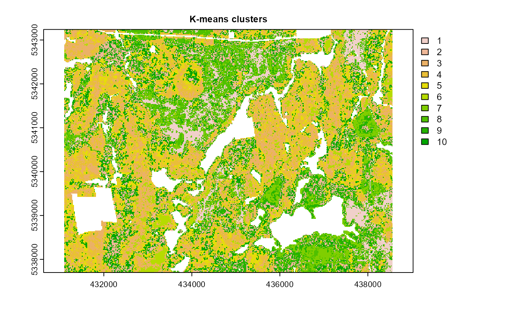
#> class : SpatRaster
#> dimensions : 277, 373, 1 (nrow, ncol, nlyr)
#> resolution : 20, 20 (x, y)
#> extent : 431100, 438560, 5337700, 5343240 (xmin, xmax, ymin, ymax)
#> coord. ref. : +proj=utm +zone=17 +ellps=GRS80 +towgs84=0,0,0,0,0,0,0 +units=m +no_defs
#> source : memory
#> name : strata
#> min value : 1
#> max value : 10
strat_kmeans(mraster = mraster, # input
nStrata = 5, # algorithm will produce 4 strata
center = FALSE, # do not center data
scale = FALSE, # do not scale data
plot = TRUE, # plot output
filename = tempfile(fileext = ".tif"), # write output sraster to file
overwrite = TRUE) # overwrite file on disc if it exists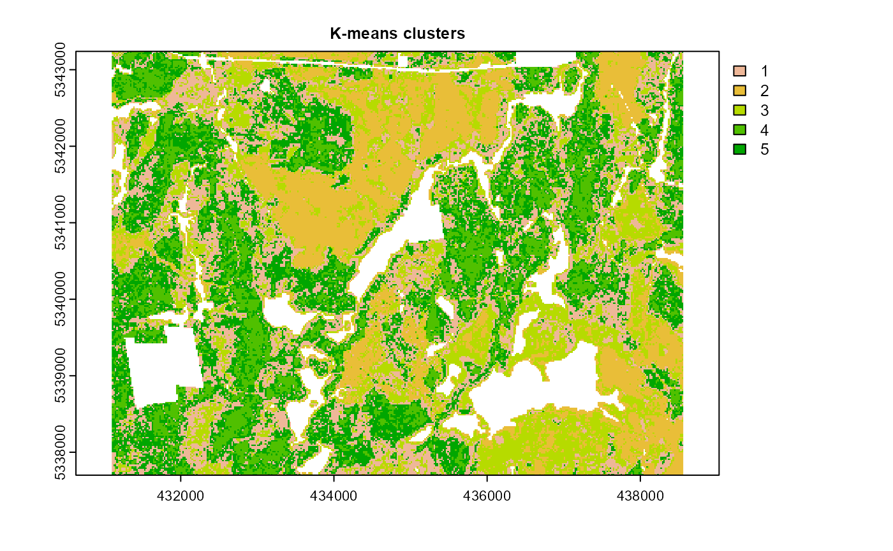
#> class : SpatRaster
#> dimensions : 277, 373, 1 (nrow, ncol, nlyr)
#> resolution : 20, 20 (x, y)
#> extent : 431100, 438560, 5337700, 5343240 (xmin, xmax, ymin, ymax)
#> coord. ref. : +proj=utm +zone=17 +ellps=GRS80 +towgs84=0,0,0,0,0,0,0 +units=m +no_defs
#> source : memory
#> name : strata
#> min value : 1
#> max value : 5
strat_pcomp
The strat_pcomp() algorithm calculates principal components on the input mraster then divides data into equal sized strata. Strata can be defined by using the primary (PC1) only (nStrata), or primary & secondary (PC2 - nStata2) principal components. If nStata2 is defined, PC2 is used and the total number of strata will be \[nStrata * nStrata2\].
#--- perform stratification using principal components ---#
strat_pcomp(mraster = mraster, # input
nStrata = 5, # 5 strata with primary PC only
plot = TRUE) # plot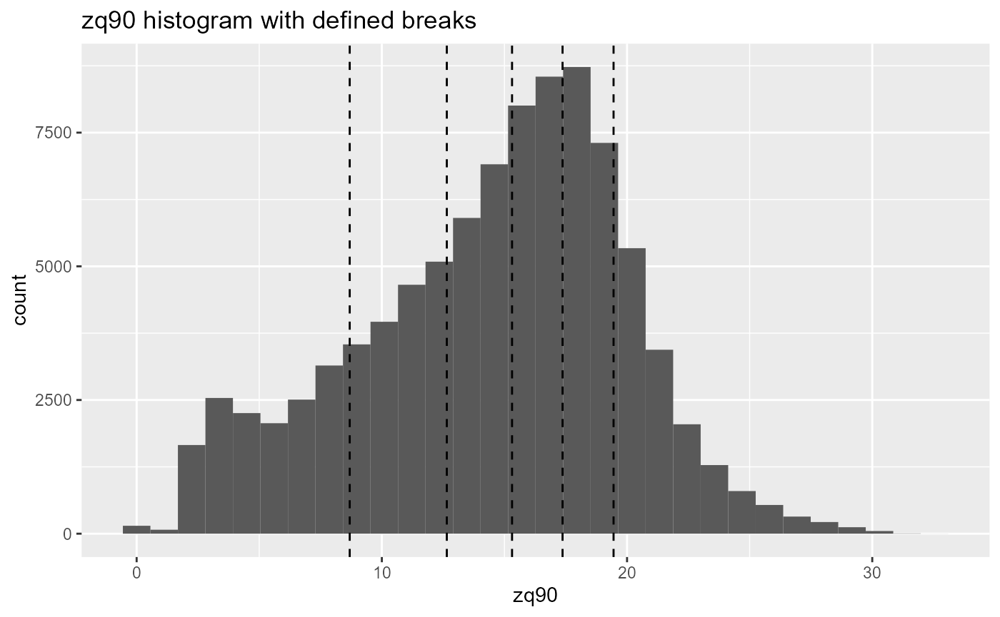
#> class : SpatRaster
#> dimensions : 277, 373, 1 (nrow, ncol, nlyr)
#> resolution : 20, 20 (x, y)
#> extent : 431100, 438560, 5337700, 5343240 (xmin, xmax, ymin, ymax)
#> coord. ref. : +proj=utm +zone=17 +ellps=GRS80 +towgs84=0,0,0,0,0,0,0 +units=m +no_defs
#> source : memory
#> name : strata
#> min value : 1
#> max value : 5
strat_pcomp(mraster = mraster, # input
nStrata = 4, # 4 strata with primary
nStrata2 = 4, # 4 strata with secondary PC - will produce 16 output strata
plot = TRUE) # produce output details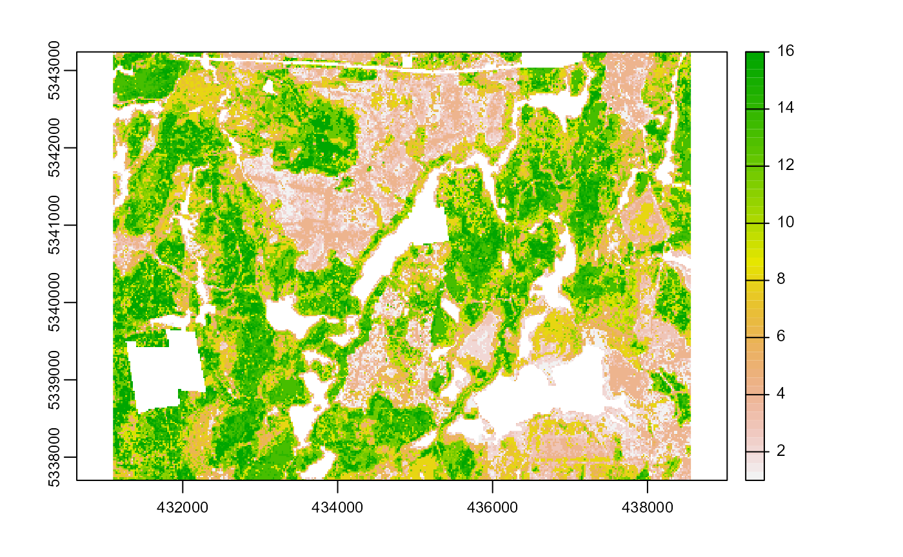
#> class : SpatRaster
#> dimensions : 277, 373, 1 (nrow, ncol, nlyr)
#> resolution : 20, 20 (x, y)
#> extent : 431100, 438560, 5337700, 5343240 (xmin, xmax, ymin, ymax)
#> coord. ref. : +proj=utm +zone=17 +ellps=GRS80 +towgs84=0,0,0,0,0,0,0 +units=m +no_defs
#> source : memory
#> name : strata
#> min value : 1
#> max value : 16
strat_pcomp(mraster = mraster, # input
nStrata = 3, # 3 strata with primary PC
nStrata2 = 3, # 4 strata with secondary PC - will produce 9 output strata
filename = tempfile(fileext = ".tif")) # write output sraster to file
#> class : SpatRaster
#> dimensions : 277, 373, 1 (nrow, ncol, nlyr)
#> resolution : 20, 20 (x, y)
#> extent : 431100, 438560, 5337700, 5343240 (xmin, xmax, ymin, ymax)
#> coord. ref. : +proj=utm +zone=17 +ellps=GRS80 +towgs84=0,0,0,0,0,0,0 +units=m +no_defs
#> source : memory
#> name : strata
#> min value : 1
#> max value : 9
strat_breaks
The strat_breaks() function stratifies data based on user-defined breaks in covariates. A single metric can be defined or an additional metric2 can be supplied. breaks and breaks2 correspond to the user-defined breaks for metric and metric2 respectively.
#--- perform stratification using user-defined breaks ---#
#--- define breaks for metric ---#
breaks <- c(seq(0,100,20))
breaks
#> [1] 0 20 40 60 80 100
#--- perform stratification using user-defined breaks ---#
values <- terra::values(mraster$zmax)
#--- define breaks for metric ---#
breaks2 <- quantile(values, na.rm=TRUE)
breaks2
#> 0% 25% 50% 75% 100%
#> 0.00 5.62 9.07 12.16 23.82Once the breaks have been created we can input them into the function using the breaks and breaks2 parameters.
#--- stratify on 1 metric only ---#
strat_breaks(mraster = mraster$zmean,
breaks = breaks,
details = TRUE,
plot = TRUE)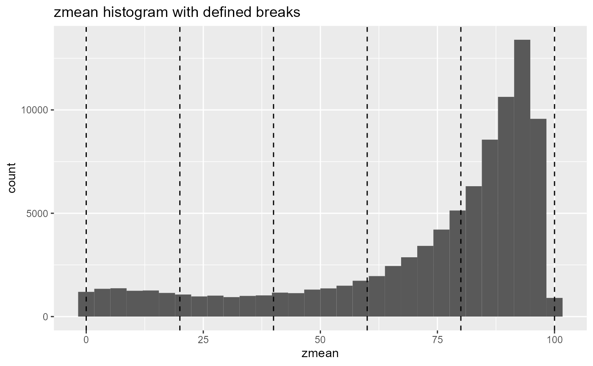
#> $details
#> $details$breaks
#> [1] 0 20 40 60 80 100
#>
#> $details$breaks2
#> NULL
#>
#>
#> $raster
#> class : SpatRaster
#> dimensions : 277, 373, 1 (nrow, ncol, nlyr)
#> resolution : 20, 20 (x, y)
#> extent : 431100, 438560, 5337700, 5343240 (xmin, xmax, ymin, ymax)
#> coord. ref. : +proj=utm +zone=17 +ellps=GRS80 +towgs84=0,0,0,0,0,0,0 +units=m +no_defs
#> source : memory
#> name : strata
#> min value : 2
#> max value : 7
#>
#> $plot
#--- stratify on 1 metric only ---#
strat_breaks(mraster = mraster$zmax,
breaks = breaks2,
details = TRUE,
plot = TRUE) 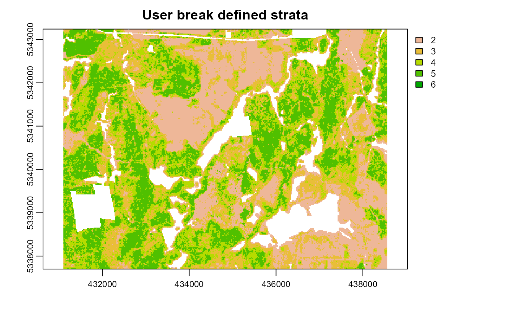
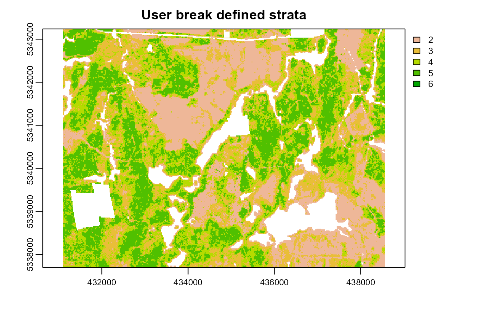
#> $details
#> $details$breaks
#> 0% 25% 50% 75% 100%
#> 0.00 5.62 9.07 12.16 23.82
#>
#> $details$breaks2
#> NULL
#>
#>
#> $raster
#> class : SpatRaster
#> dimensions : 277, 373, 1 (nrow, ncol, nlyr)
#> resolution : 20, 20 (x, y)
#> extent : 431100, 438560, 5337700, 5343240 (xmin, xmax, ymin, ymax)
#> coord. ref. : +proj=utm +zone=17 +ellps=GRS80 +towgs84=0,0,0,0,0,0,0 +units=m +no_defs
#> source : memory
#> name : strata
#> min value : 2
#> max value : 6
#>
#> $plot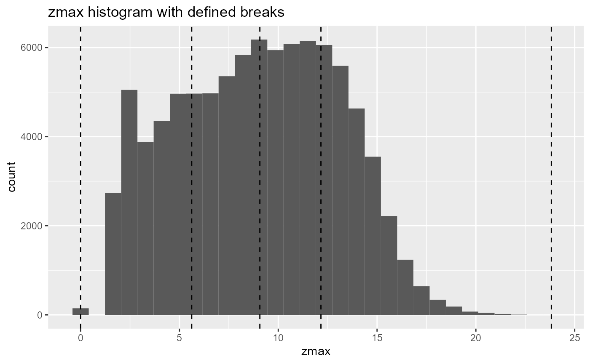
strat_osb
The strat_osb() algorithm implements the optimum sample boundaries algorithm implmented in the stratifyR package. The basics of this algorithm are to provide the number of desired strata nStrata and samples nSamp. The algorithm then analyzes the data for the optimal locations to establish breaks in the covariate metric, which are used as stratum boundaries.
This function can take a bit longer to run so please be patient! For the purpses of this example I have used a limited number of nStrata and nSamp to ensure they run and render quickly.
#--- perform optimum sample boundary stratification ---#
strat_osb(mraster = mraster$zsd, # input
nSamp = 50, # number of desired samples
nStrata = 3, # number of desired strata
plot = TRUE) # plot
strat_osb(mraster = mraster$zmax, # input
nSamp = 25, # number of desired samples
nStrata = 3, # number of desired strata
plot = TRUE, # plot
details = TRUE) # produce output details
strat_poly
The strat_poly() algorithm stratifies based on spatial polygon attributes and features. A user may wish to stratify based on categorical or empirical variables that are not given by ALS data (e.g. species from forest inventory polygons). This method allows the user to define the attribute of interest as well as how features within attributes should be grouped for stratification.
The user defines the input poly and associated attribute. A raster layer must be provided as a guide for spatial extent and resolution for the output stratification polygon. Based on a vector or list of features, stratification is applied, and the polygon is rasterized into appropriate strata.
#--- load in polygon coverage ---#
poly <- system.file("extdata", "inventory_polygons.shp", package = "sgsR")
fri <- sf::st_read(poly)
#> Reading layer `inventory_polygons' from data source
#> `C:\Users\tgood.stu\Documents\R\win-library\4.1\sgsR\extdata\inventory_polygons.shp'
#> using driver `ESRI Shapefile'
#> Simple feature collection with 632 features and 3 fields
#> Geometry type: MULTIPOLYGON
#> Dimension: XY
#> Bounding box: xmin: 431100 ymin: 5337700 xmax: 438560 ymax: 5343240
#> Projected CRS: UTM_Zone_17_Northern_HemisphereThe attribute column must be defined, while the features within must be specified to define the number and composition of the output strata. In the case below the attribute = "NUTRIENTS" and features within NUTRIENTS (poor, rich, medium) will define the 3 desired output classes.
#--- stratify polygon coverage ---#
#--- specify polygon attribute to stratify ---#
attribute <- "NUTRIENTS"
#--- specify features within attribute & how they should be grouped ---#
#--- as a single vector ---#
features <- c("poor", "rich", "medium")
srasterpoly <- strat_poly(poly = fri, # input polygon
attribute = attribute, # attribute to stratify by
features = features, # features within attribute
raster = sraster, # raster to define extent and resolution for output
plot = TRUE) # plot output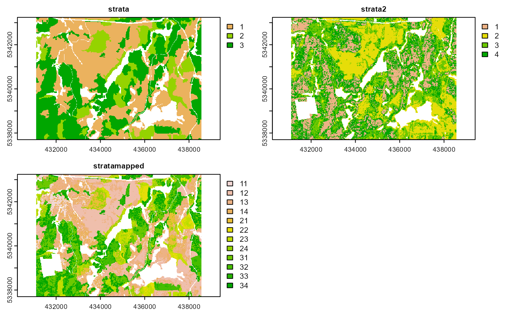
features can also be made to amalgamate classes. In the example below rich and medium features are combined while low is left alone. The 2 vectors are then added to a list, which outputs 2 classes (low & rich/medium).
#--- or as multiple lists ---#
g1 <- "poor"
g2 <- c("rich", "medium")
features <- list(g1, g2)
strat_poly(poly = fri,
attribute = attribute,
features = features,
raster = sraster,
plot = TRUE,
details = TRUE)
#> $outRaster
#> class : SpatRaster
#> dimensions : 277, 373, 1 (nrow, ncol, nlyr)
#> resolution : 20, 20 (x, y)
#> extent : 431100, 438560, 5337700, 5343240 (xmin, xmax, ymin, ymax)
#> coord. ref. : +proj=utm +zone=17 +ellps=GRS80 +towgs84=0,0,0,0,0,0,0 +units=m +no_defs
#> source : memory
#> name : strata
#> min value : 1
#> max value : 2
#>
#> $lookUp
#> strata features
#> 1 1 poor
#> 2 2 rich
#> 3 2 medium
#>
#> $poly
#> class : SpatVector
#> geometry : polygons
#> dimensions : 524, 2 (geometries, attributes)
#> extent : 431100, 438560, 5337700, 5343240 (xmin, xmax, ymin, ymax)
#> coord. ref. : +proj=utm +zone=17 +ellps=GRS80 +units=m +no_defs
#> names : NUTRIENTS strata
#> type : <chr> <num>
#> values : poor 1
#> poor 1
#> poor 1You will notice that the details parameter is present above. This returns the output outRaster, the $lookUp table associated with the strata, and the polygon ($poly) created to drive the stratification based on attribute and features provided by the users.
strat_map
There may be an instance where multiple levels of stratification are desired. For instance a user may want to combine the output from strat_poly() above with 3 classes, with the 4 class kmeans stratification kmeans.
The total number of classes will always be the multiplicative of the number of strata. i.e. if sraster has 3 strata and sraster2 has 4 strata the output of strat_map() will be 12 strata total.
#--- map srasters ---#
strat_map(sraster = srasterpoly, # strat_poly 3 class stratification
sraster2 = sraster, # strat_kmeans 4 class stratification
plot = TRUE)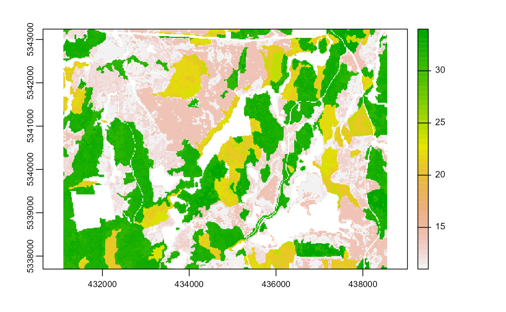
#> class : SpatRaster
#> dimensions : 277, 373, 1 (nrow, ncol, nlyr)
#> resolution : 20, 20 (x, y)
#> extent : 431100, 438560, 5337700, 5343240 (xmin, xmax, ymin, ymax)
#> coord. ref. : +proj=utm +zone=17 +ellps=GRS80 +towgs84=0,0,0,0,0,0,0 +units=m +no_defs
#> source : memory
#> name : strata
#> min value : 11
#> max value : 34The convention for the numeric value of output strata is the concatenation (merging) of sraster strata and sraster2 strata. See $lookUp for a clear depiction of this.
strat_map(sraster = srasterpoly, # strat_poly 3 class stratification
sraster2 = sraster, # strat_poly 3 class stratification
stack = TRUE, # stack input and oputput strata into multi layer ouput raster
details = TRUE, # provide additional details
plot = TRUE) # plot output
#> Stacking sraster, sraster2, and their combination (stratamapped).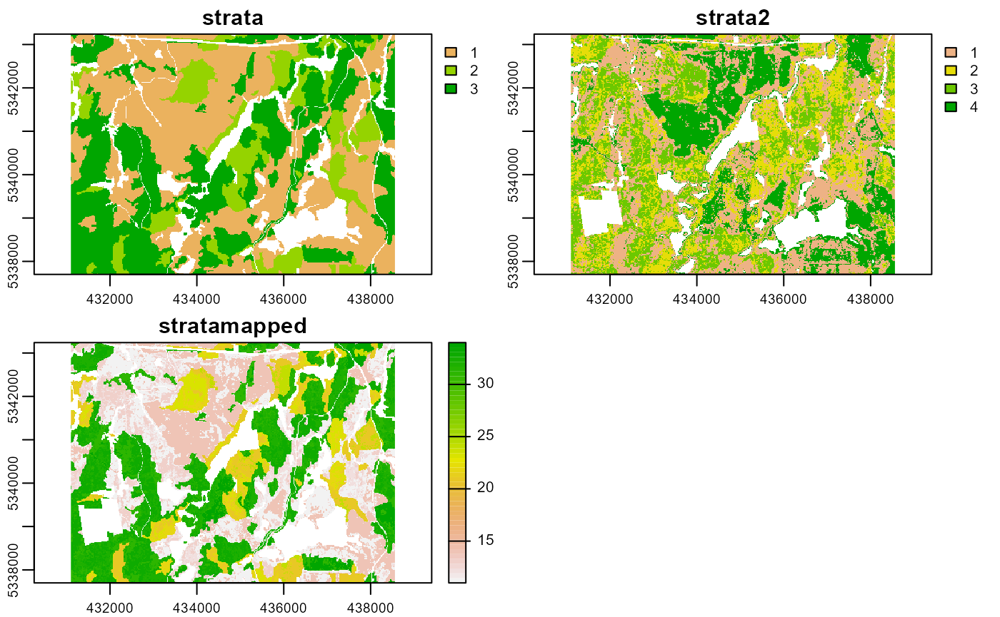
#> $outRaster
#> class : SpatRaster
#> dimensions : 277, 373, 3 (nrow, ncol, nlyr)
#> resolution : 20, 20 (x, y)
#> extent : 431100, 438560, 5337700, 5343240 (xmin, xmax, ymin, ymax)
#> coord. ref. : +proj=utm +zone=17 +ellps=GRS80 +towgs84=0,0,0,0,0,0,0 +units=m +no_defs
#> sources : memory
#> memory
#> memory
#> names : strata, strata2, stratamapped
#> min values : 1, 1, 11
#> max values : 3, 4, 34
#>
#> $lookUp
#> strata strata2 stratamapped
#> 1 3 1 31
#> 2 3 4 34
#> 3 1 2 12
#> 4 1 3 13
#> 5 3 2 32
#> 6 3 3 33
#> 7 1 1 11
#> 8 1 4 14
#> 9 2 1 21
#> 10 2 2 22
#> 11 2 4 24
#> 12 2 3 23